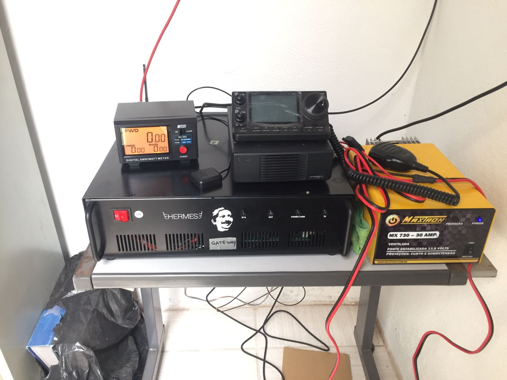
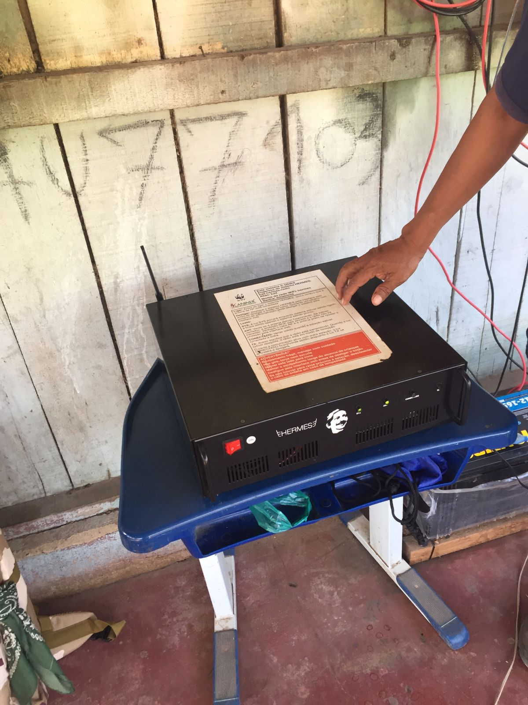

Next: HERMES System Architecture Up: Software description (architecture and Previous: Introduction Contents
This section briefly introduces what HERMES system can do today. HERMES is basically composed of:
Rhizomatica developed the HERMES hardware which embedds all the needed parts for a simple to use HF telecomunication equipment. Figure 3.1 and 3.2 contains a picture of the HERMES box. The HERMES box contains everything needed for joining a HERMES network, while users have access to the HERMES services over WiFi or ethernet.
|
 |
|
 |
HERMES uses GNU UUCP with Debian downstream patches (version 1.07-27 or greater, available at: https://packages.debian.org/bullseye/uucp).
Specific HERMES network stack source code, radio firmware and other system components are available at: